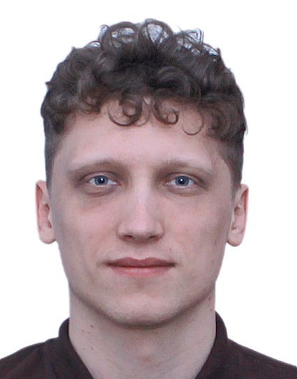

Github Code

Original Paper
Authors
Andrey Romanov 
Min Gee Cho
Mary C. Scott
Philipp M. Pelz 
Short Summary
Electron ptychography has revolutionized atomic-scale imaging by providing exceptional contrast for both light and heavy elements. While current technology can achieve remarkable lateral resolution below 0.5 Ångstroms, the depth (axial) resolution has remained limited to several nanometers—until now.
In this work, we introduce multi-slice ptychographic electron tomography, a breakthrough technique that achieves true 3D atomic-resolution imaging beyond conventional depth of focus limits. Using a Co₃O₄ nanocube as our test subject, we demonstrate:
- High-resolution 3D phase-contrast imaging: 2Å axial and 0.7Å transverse resolution
- Large imaging volume: (18.2 nm)³
- 13.5× improvement in depth resolution compared to existing phase-contrast methods providing 3D imaging beyond the depth of focus limits
This advancement significantly expands the capabilities of high-resolution electron microscopy, opening new possibilities for studying larger material volumes at atomic resolution.
Our ongoing research focuses on further refinements to enable 3D imaging of individual weakly scattering atoms in large volumes, promising even more detailed insights into material structures.
Citation
@article{romanov2024,
author = {Romanov, Andrey and Cho, Min Gee and Scott, Mary C. and
Pelz, Philipp M.},
title = {Multi-Slice {Electron} {Ptychographic} {Tomography} for
{Three-dimensional} {Phase-contrast} {Microscopy} Beyond the {Depth}
of {Focus} {Limits}},
journal = {Journal of Physics: Materials},
volume = {21},
number = {2},
date = {2024-11-01},
url = {https://doi.org/...},
doi = {10.1234/xxx},
langid = {en}
}